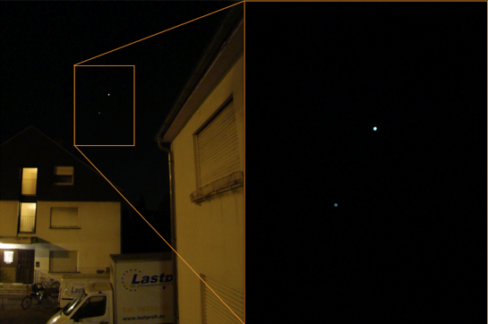

Almost there

8 days and counting.
Word up guys and gals. News from the south - well not really just a blurb on my doings, so I can get my mind away from all the thesis writing. I'm about to hand in 3+ years of work so have plenty to do with getting it into shape. I'm not completely stressed over it yet but that might come within the last 8 days. But not to get completely swamped, here's a couple of words about the last three weeks or so.
When I wrote last time I was about to leave for Denmark. Before I did that J&S, two of my friends from University in DK, dropped by. S is at ESO in Munich for a couple of months and since J was visiting they could conveniently rent a car and visit me for a couple of days. It was really great showing them HD. We manage to do all the mandatory stuff and still had plenty of time to chat about old days; really enjoyed - thanks!
After that I went back to Denmark for almost a week. As mentioned last time I already had plenty of plans and appointments before leaving Germany. Old friends, beers, birthdays, family dinners, a move and a 50 years anniversary. It was my moms aunt and uncle celebrating. Pretty damn impressive - especially nowadays - that they have been living together for 50... that is fifty years. Wish I will end there some day. As the tradition says we went there to wake them in the morning. Unfortunately Martin couldn't join since he was on the way back from the Italian Alps. But either way; we went there early and woke them with rusty voices and cold feet. The same night they threw a great party so after breakfast and 'en lille en' we went into Copenhagen (they live in Valby), where my parents had arranged for a couple of hotel rooms, so we didn't have to go back to Funen after the party in the evening. Before we could get the room we went out for a light lunch... and what a lunch! Old traditional 'smørrebrød' and a good beer. I got a pariserbøf and what a pleasure - haven't gotten one of those for ages. Afterwards we went back to the hotel for an afternoon nap so we were ready for the party. I must admit I was a bit sceptic about the evening. A bunch of old people most of whom passed 60 decades ago and food which was tasty in the 80s was not really what I was in the mood for. But damn I was wrong. The food was EXCELLENT and most of the people acted like they were in their best years (maybe they are) instead of sipping the tea and complaining about youth and the world today. In the end it turned out to be a really good night.
{kind=link}
But in Denmark it was not only food, friends and drinks, I also has to work on the thesis and get paper work done. For instance I had to get a translation of my gymnasium diploma and a criminal record. Without these I cannot sign up for my defense in July - what the F is that about. Why do I need to show I went to gymnasium as a teenager when I have a University degree - shouldn't that be enough. And what's about the criminal record... "sorry your not a good guy so we can't give you a degree even though you have worked hard for it the last several years"... is that it? That's ridiculous! Well now I got it, so I just hope they accept the translations and all the other paper I collected so I can defend as planned.
When I got back to HD it was back to the salt mines full time. I managed to get back on schedule but I had to include my birthday in the process. I didn't mind, though, as I was celebrated back in Denmark. Even though I was in the office all day the weather gods send me a little something on the day. I was tapping away on the thesis when my office mate D recommended me to have a look outside (thanks man), and I'm glad I did 'cause I've never seen anything like it:
It's supposedly a special layer of hexagonal ice crystals in the atmosphere oriented in the exact right way giving the rainbow ring around the sun. The larger more fussy white ring is a halo of reflection in the 'ordinary' water vapor in the atmosphere - I think... correct me if I'm wrong. Either way it was pretty spectacular. A great sight on an otherwise pretty average day at the office.
And now we are at it. Some weeks ago I caught the Venus-Jupiter conjunction outside my house (see above, not the best picture I admit, but at least I got one). Unfortunately I didn't catch it when the moon was joining the get2gether like this guy which was pretty spectacular which was pretty spectacular.
{kind=link}
One last thing before I end this round of blahblah. Since I haven't managed to visit Berlin in the 3.5 years I've been here in Germany and think it's kind of embarrassing I ordered a return ticket with Desutsche Bahn before my BahnCard expires. I also found a cheap hotel so now that's fixed. But as it will be my first time in Berlin I was wondering if any of you have any suggestions for what to see, taste and/or experience there? If you do just give me a hint in a comment. So far my list includes:
- Brandeburger tor
- Fernsehturm
- Checkpoint Charlie
- Kaiser Wilhelm Gedächtniskirche
- The East Side Gallery
Till next time,
KBS
Sunday, 22 April 2012
